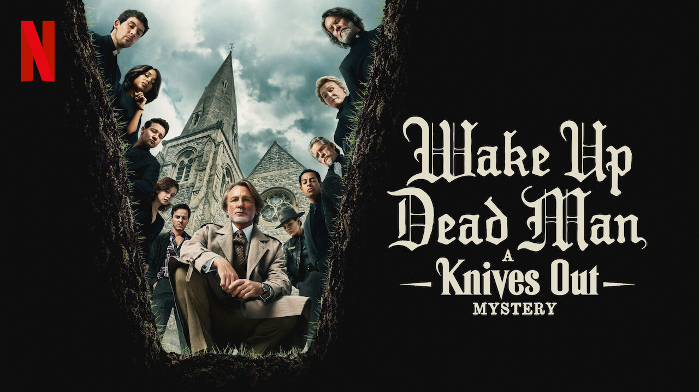

Melhores Filmes de Comedia em 2026

Data que estreiou: 26 de novembro de 2025
A morte repentina de um renomado escritor reúne sua família em uma mansão misteriosa. Contradições nos depoimentos, heranças disputadas e ressentimentos antigos transformam o velório em um verdadeiro jogo de aparências. É nesse cenário que um detetive entra em cena disposto a desmontar cada mentira com calma e ironia.
Misturando humor ácido, crítica social e um mistério cuidadosamente construído, o filme conduz o espectador por reviravoltas constantes até revelar que nada é exatamente o que parece.
Leia a matéria completa aqui!